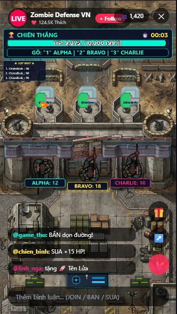
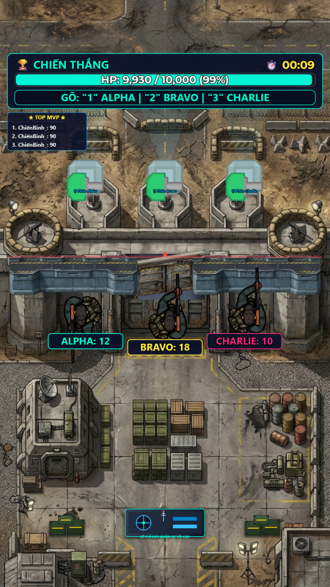
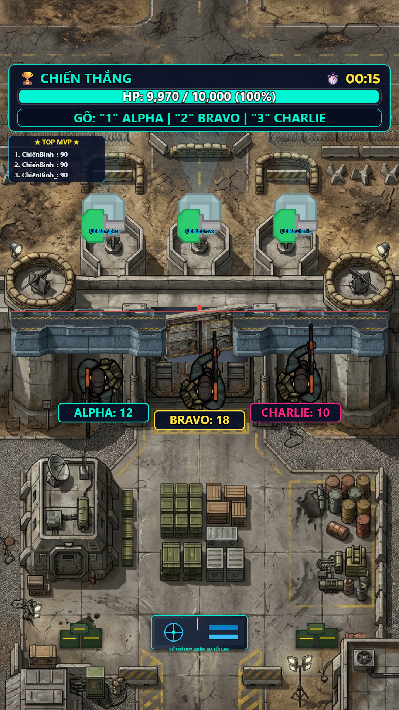
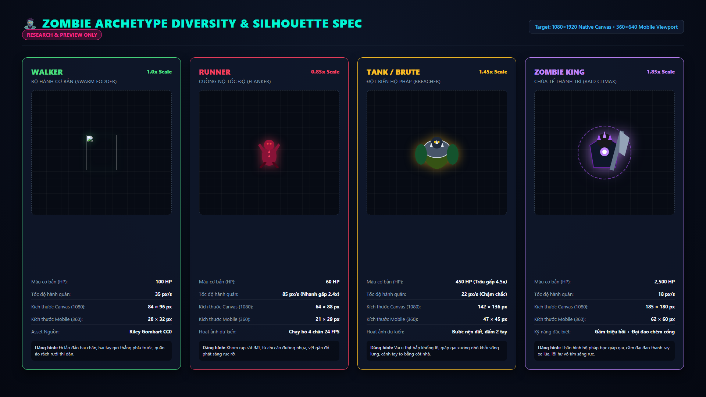
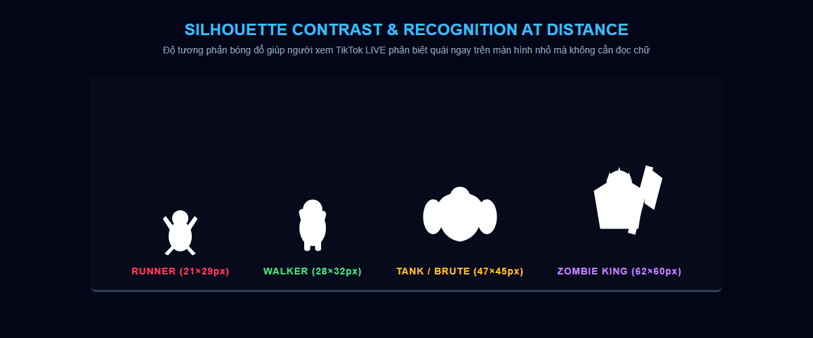
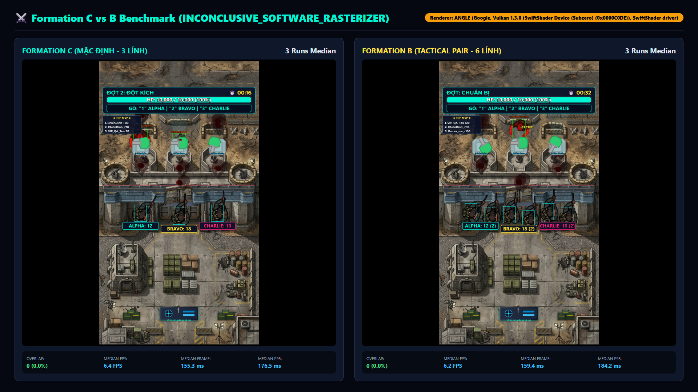
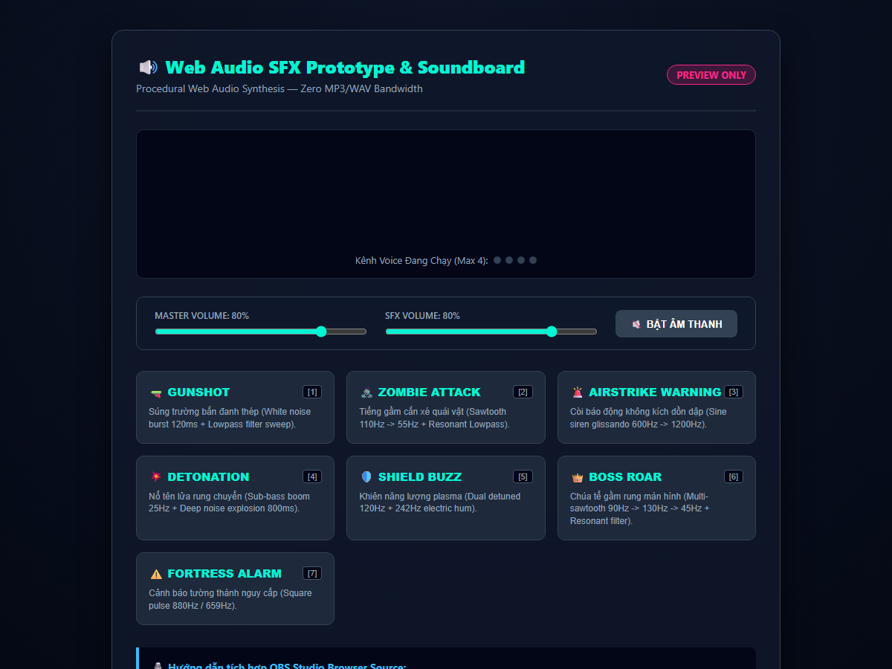

Server-Authoritative TikTok LIVE Interactive Defense Monorepo
apps/game-client/src/ui/HUD.ts và SquadVisualizer.ts.
Quy đổi tỷ lệ hiển thị canvas 1080×1920 xuống mobile viewport 360×640 (1px mobile = 3px canvas).
Đồng bộ chuẩn 100% màu sắc Squad SSOT: ALPHA = Cyan (#00f5d4), BRAVO = Vàng (#fee440), CHARLIE = Hồng (#f72585).

Text Wave 26px (~8.7px mobile), Base HP 18px (~6.0px mobile), Callout JOIN nổi bật viền cyan.

Badge Squad phóng to 220×36px, viền stroke 2px theo đúng màu từng đội, text 16px bold có stroke đen 3px.

Bố cục Top Header (y: 125-267) nới rộng 142px, hoàn toàn nằm trong Safe Zone, không bị che bởi TikTok UI.
| Thành phần HUD | Cỡ chữ Cũ (Baseline) | Cỡ chữ Mới (After Polish) | Kích thước tương đương trên Mobile (360×640) | Đánh giá Trực quan |
|---|---|---|---|---|
| Wave Title (Đợt Quái) | 26px | 36px (Bold Display #00f5d4) | 12.0 px | Đạt ngưỡng >= 12px trên 360×640, rõ nét |
| Wave Timer (Thời Gian) | 24px | 36px (Bold #fee440) | 12.0 px | Đạt ngưỡng >= 12px trên 360×640, rõ nét |
| Base HP (Máu Thành Trì) | 18px | 34px (HP: X / 10,000) | 11.3 px | Rút gọn chữ thừa, không clipping |
| Callout JOIN Bình Luận | 15px | 34px (Hộp viền Cyan #00f5d4) | 11.3 px | Rõ ràng, tách khỏi TikTok top pill (y=63px >= 58px) |
| Huy hiệu Squad (Badges) | 16px (Box 220×36px) | 32px (Box 244×50px) | 10.7 px | Rút gọn thành ALPHA: 12 / BRAVO: 18 / CHARLIE: 10 |

So sánh Walker (1.0x), Runner (0.85x), Tank/Brute (1.45x) và Zombie King/Boss (1.85x).

Độ nhận diện hình khối từ xa giúp khán giả phân biệt kẻ địch ngay trên màn hình điện thoại mà không cần đọc chữ.
artifacts/gameplay-polish-review/zombie-sprite-preview/zombie_diversity_spec.json
artifacts/gameplay-polish-review/zombie-sprite-preview/zombie_diversity_roadmap.md

| Tiêu chí đánh giá | Phương Án C (Mặc Định Hiện Tại) | Phương Án B (Cặp Tác Chiến) | Kết luận Chuyên môn |
|---|---|---|---|
| Tổng số lính trực chiến | 3 lính (1 lính / lane) | 6 lính (2 lính / lane) | Giữ Formation C mặc định |
| Độ trùng lặp Sprite | 0 cặp (0.0% Overlap) | 0 cặp (0.0% Overlap) | Zero Overlap trên cả hai phương án |
| Median Avg FPS (3 runs, SwiftShader) | 6.4 FPS | 6.2 FPS | Headless CPU software rasterizer |
| Median Frame Time | 155.3 ms | 159.4 ms | Chạy cùng Chromium + SwiftShader |
| Median P95 Frame Time | 176.5 ms | 184.2 ms | Kết luận GPU: INCONCLUSIVE |
apps/game-client/src/audio/SoundManager.ts.
0 MB dung lượng file ngoài (zero WAV/MP3 bandwidth), 0 rủi ro bản quyền âm thanh, độ trễ 0ms.
Tắt âm mặc định (isMuted: true) để an toàn. Concurrency throttling tối đa 4 voices chống spam.

Mở Bàn Thử Nghiệm Âm Thanh Trực Tiếp ➔Bước 1: Trong OBS Studio, click đúp vào nguồn Browser Source của Game Overlay.
Bước 2: Tích chọn ô "Control audio via OBS" (Điều khiển âm thanh qua OBS).
Bước 3: Trên thanh Audio Mixer, kéo fader ở mức -6.0 dB để tiếng súng không lấn át giọng nói micro của Streamer.
Bước 4 (Tùy chọn): Chọn Monitor and Output trong Advanced Audio Properties để vừa nghe qua tai nghe, vừa phát lên LIVE.
| Hành động / Kỹ năng | Điều kiện kiểm chứng (Assertion Rule) | Số liệu đo đạc thực tế | Kết quả | Ảnh Minh Chứng |
|---|---|---|---|---|
| BẮN (BAN) | Bắt buộc có sự kiện SHOOT trong danh sách __ALL_VFX_EVENTS__ |
Phát hiện sự kiện SHOOT với tọa độ tia đạn |
PASS (100%) | verified_action_ban.png |
| SỬA THÀNH (SUA) | Base HP tăng đúng +15 HP (hoặc chạm trần 10,000 HP) |
deltaHp = +15 verified |
PASS (100%) | verified_action_sua.png |
| KHIÊN NĂNG LƯỢNG (SHIELD) | shieldActive === true hoặc SKILL_SHIELD_ACTIVATED verified |
Mái vòm khiên năng lượng được kích hoạt trên snapshot | PASS (100%) | verified_skill_shield.png |
| ÉP XUNG Ụ PHÁO (OVERCLOCK) | overclockActive === true hoặc SKILL_OVERCLOCK_ACTIVATED verified |
Hào quang ép xung xuất hiện trên 3 ụ pháo | PASS (100%) | verified_skill_overclock.png |
| KHÔNG KÍCH TÊN LỬA (AIRSTRIKE) | Bắt buộc nhận SKILL_AIRSTRIKE_WARNING hoặc SKILL_AIRSTRIKE_DETONATED |
Tâm ngắm không kích & vòng đỏ AoE hiển thị | PASS (100%) | verified_skill_airstrike.png |
NOT MEASURED (Requires rolling Heap/RSS profiling over 30+ minutes).